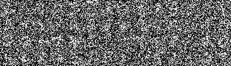

|
Wasserstein Barycenter and its Application to Texture Mixing December 2023
In this study, we explore the work conducted by Julien Rabin et al. to perform texture mixing using Wasserstein Barycenter. We try to reproduce the results and propose new techniques to enhance the texture synthesis. [Paper] [Code]
|
|
|  |
Denoising score matching for diffusion models December 2023
Diffusion models have shown impressive results on many tasks such as image generation, inpainting or denoising. In this paper, we investigate how the score of a probability distribution \(p(x)\), characterized by \(\nabla_x \log(p(x))\), can be used for these tasks. [Paper]
|
© Copyright 2025 Antoine Ratouchniak. Powered by Jekyll with al-folio theme. Hosted by GitHub Pages.